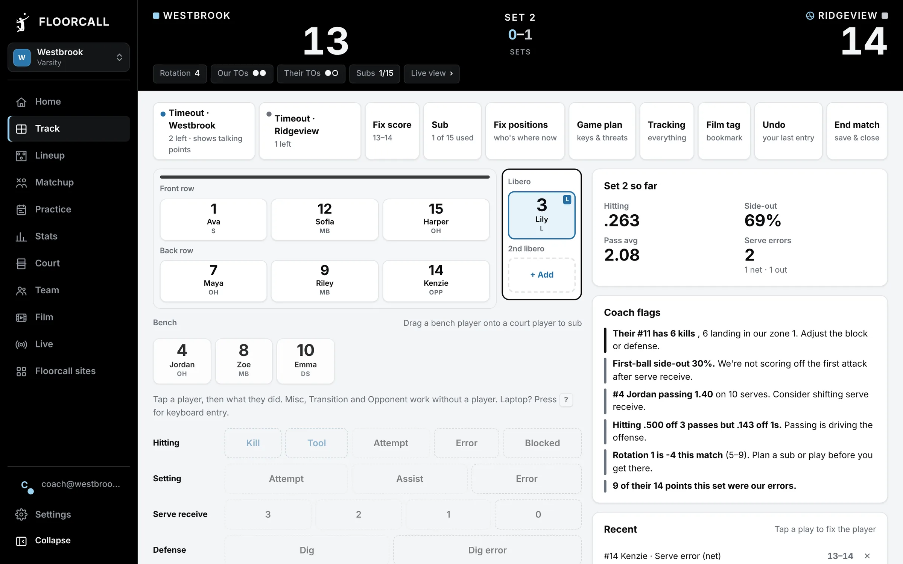
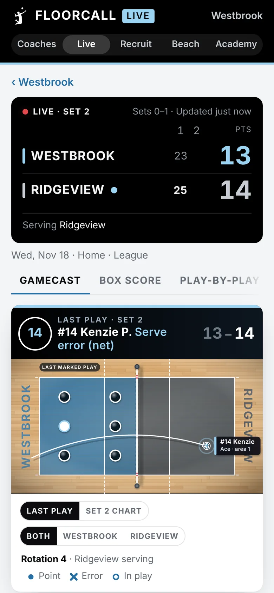
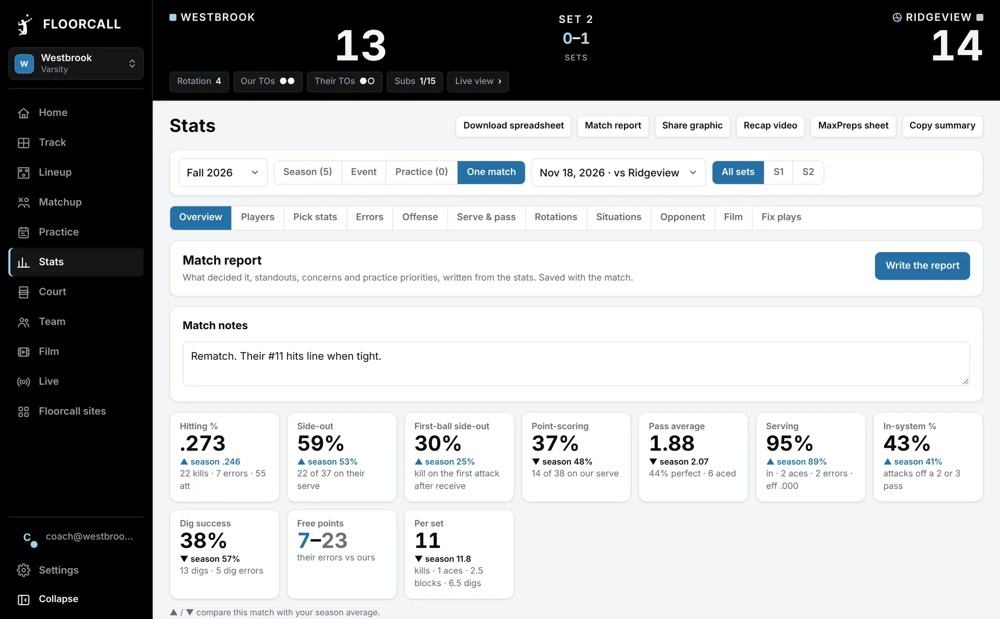
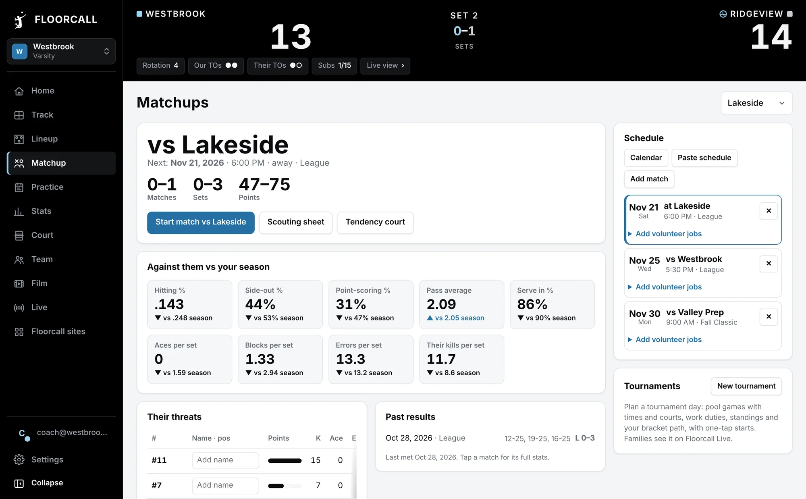
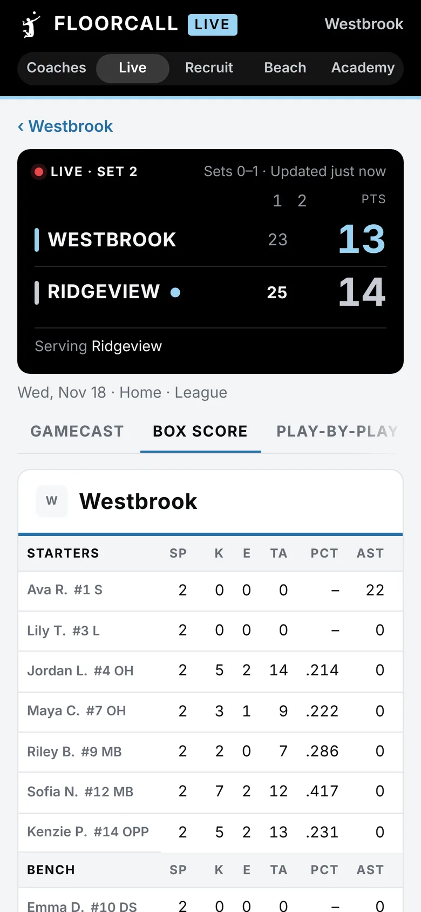
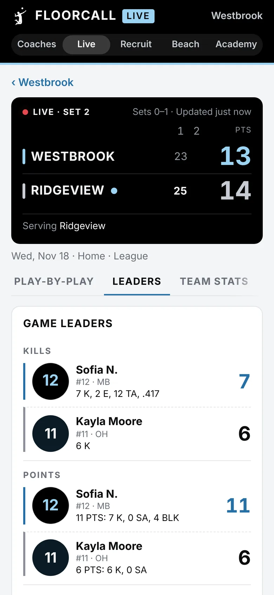
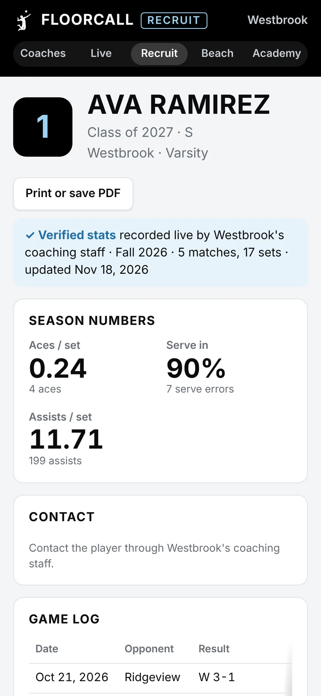
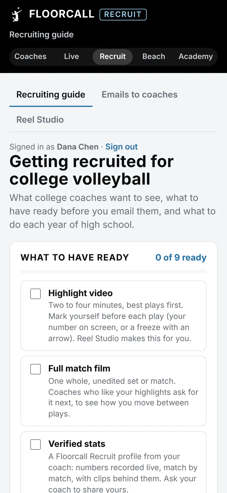
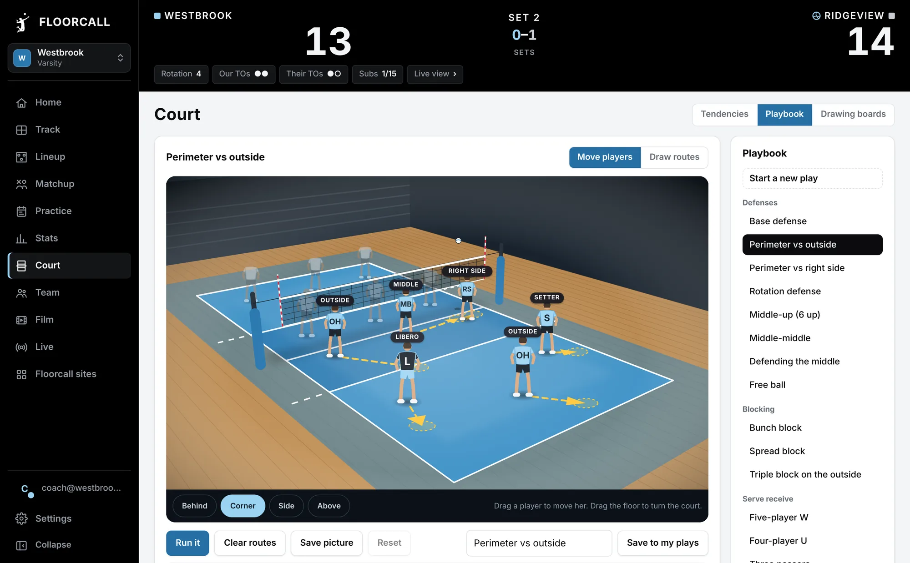

The stat sheet that coaches from the bench.
Track every touch live, see the numbers that decide matches, and get stats to your players, families and recruiters before you leave the gym.


Every number you need at a timeout.
Floorcall knows a kill came off a 1-pass, which rotation is bleeding points and where their hitter is landing it. Side-out by pass grade, in-system hitting, rotation results and setter distribution update with every tap.
Explore a sample season
Works in any gym
No Wi‑Fi needed. Everything saves on the device and syncs when you're back online.
Your whole staff
Assistants track passing or serving on their own phones, and every entry lands in one match.
Done when the match is
MaxPreps sheet, spreadsheet, match report and a final-score graphic, ready to post.
Know the opponent before the first serve.
Every time you play a team, Floorcall remembers it. The rematch page shows their threats by jersey number, where their kills land, and a game plan built from your own numbers against them.

Families follow every point.
Floorcall Live turns your tracking into a broadcast-style gamecast: the court with where every ball landed, play-by-play with the player next to each play, a full box score and game leaders, on any phone. Share one link or a six-letter code, and followers get a notification when the match starts and ends.
Watch a demo game

Stats a college coach can trust.
Floorcall Recruit gives athletes a profile with numbers verified by their coaching staff, a game log and highlights. It also has a recruiting guide, emails to college coaches written from their stats, and Reel Studio for building a highlight video.
Visit Floorcall Recruit

Stat a whole match from film.
Upload the video and Floorcall finds each rally from the referee's whistle, so you skip the dead time. Every play you enter becomes a clip.
Ask for clips
Type “all solo blocks” or “Maya's kills vs Buchanan” and watch them back to back, from one match or the whole season.
A breakdown of every match
Where the points went, the rotation that got stuck, their best hitter and where the kills land, and what to keep doing. Each finding plays as clips.
Best rallies, no stats needed
Floorcall ranks every rally by how the crowd and bench reacted, so a parent's phone video still gives you the top ten.
Team film sessions
Pick clips, add a note, draw on the frozen frame, grade the rep and tag who it’s for. Players watch on their phones.
See who watched
Each clip is ticked off as a player finishes it, so you know who's ready for practice.
Draw it up on a real court.
Defenses, blocking schemes, serve-receive shapes and hitting plays on a 3D court you can turn. Drag players, draw their routes, run the movement, then save your version and share it with the team.

Who’s coming
Families tap Going, Maybe or Can’t go on your schedule. You see the names.
Volunteer jobs
Ask for line judges, a scorebook or snacks. Parents sign up; you see who’s covered.
One message, every family
Announcements reach everyone following the team, with a notification. One way, so no group-chat chaos.
And the rest of the season.
Lineups and rotations
All six rotations with results, and a lineup suggestion from the data.
Practice plans
Built from what the stats say to work on, with a drill library and attendance.
Player pages
Trends, goals and a report card for every player.
Ask your stats
“Who should pass in rotation 2?” answered from your own numbers.
An errors page
Every point you gave away, by kind, by player and by rotation.
Pick your stats
Choose the columns you care about for the team or one player, then print.
Their roster
Enter their numbers, and names if you like, so you know who's scoring on you.
Fix plays
Change, delete or add any play afterward. Everything recalculates.
Scrimmages
Split the roster, track both sides and compare.
Keyboard entry
Stat keepers on a laptop type a jersey number and a letter.
Two liberos
Name one or two and swap them between rallies; stats follow whoever is in.
Clubs
Every team’s record and numbers, one calendar for all of them with gym clashes flagged, and club-wide leaders.
Tryouts
Your staff rates every player skill by skill on their phones. Floorcall ranks them and turns your offers into a roster.
Practices on Live
Families see practice times next to matches and say if their player can make it.
Recap videos
A vertical video of the match or the season, with plays from your film, ready for Reels and TikTok.
Beach
Score and stat beach doubles: servers, side switches, a box score, and a live link for families.
Lessons
Private lessons and clinics on their own site: schedule sessions, count reps, and let each athlete see their progress.
Track your next match with it.
Free while in beta, then one price per team. Set up your roster in a couple of minutes, or look around a full sample season first.